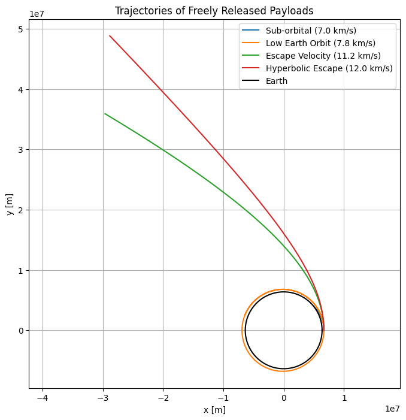

Problem 3
Trajectories of a Freely Released Payload Near Earth
Motivation
When a payload is released from a moving spacecraft near Earth, its subsequent trajectory is determined by its initial velocity, altitude, and direction. This problem is a compelling application of orbital mechanics, offering insights into various possible outcomes such as:
-
Stable orbits (elliptical or circular)
-
Reentry trajectories
-
Escape trajectories (parabolic or hyperbolic)
Depending on the initial conditions, the payload may enter a closed orbit, crash back to Earth, or escape Earth’s gravitational field. Understanding these motions is crucial for real-world space missions like satellite deployment, orbital transfers, space probes, reentry planning, and escape maneuvers.
1. Theoretical Background
Newton's Law of Universal Gravitation
The gravitational force acting on a payload of mass 𝑚 near Earth of mass 𝑀 is:
Where:
- \( F \) is the gravitational force,
- \( G = 6.674 \times 10^{-11}\, \text{Nm}^2/\text{kg}^2 \),
- \( M \) is Earth’s mass,
- \( m \) is the payload’s mass,
- \( r \) is the distance from Earth's center.
This force results in acceleration \(a\):
Orbital Trajectory Classification
The shape of the trajectory depends on total mechanical energy:
| Trajectory Type | Total Energy \(E\) | Eccentricity \(e\) |
|---|---|---|
| Circular Orbit | \(< 0\) | 0 |
| Elliptical Orbit | \(< 0\) | \(0 < e < 1\) |
| Parabolic | \(= 0\) | 1 |
| Hyperbolic | \(> 0\) | \(e > 1\) |
✔️Note : Both symbols (\(\varepsilon\) and \(E\)) are used in physics, but the context matters:
In orbital mechanics and astrodynamics:
- \(\varepsilon\) (Greek letter epsilon) is commonly used to denote the specific mechanical energy, which is mechanical energy per unit mass: \(\varepsilon\)
- Units: J/kg
If you're referring to total mechanical energy (not per unit mass):
- Then \(E\) is used
- Units: J (joules)
Escape Velocity
At Earth's surface (radius ≈ 6371 km), \(v_{\text{esc}} \approx 11.2 \, \text{km/s}\)
2. Simulation Setup
We assume:
- 2D motion in a plane
- Central gravitational force from Earth
- No air resistance (vacuum)
We'll simulate the trajectory of a payload launched from Earth’s low orbit with different initial velocities.
3. Python Simulation
We’ll use a simple numerical method (Euler or Runge-Kutta) to compute and visualize trajectories.
import numpy as np
import matplotlib.pyplot as plt
# Constants
G = 6.67430e-11 # Gravitational constant [m^3 kg^-1 s^-2]
M = 5.972e24 # Earth mass [kg]
R_earth = 6.371e6 # Earth radius [m]
# Initial conditions
altitude = 300e3 # 300 km above Earth's surface
r0 = R_earth + altitude
v_escape = np.sqrt(2 * G * M / r0)
# Time parameters
dt = 1.0 # time step [s]
t_max = 8000 # total time [s]
def simulate_trajectory(vx0, vy0):
x, y = [r0], [0]
vx, vy = [vx0], [vy0]
t = [0]
for _ in range(int(t_max/dt)):
r = np.sqrt(x[-1]**2 + y[-1]**2)
if r < R_earth: # Crash condition
break
ax = -G * M * x[-1] / r**3
ay = -G * M * y[-1] / r**3
vx_new = vx[-1] + ax * dt
vy_new = vy[-1] + ay * dt
x_new = x[-1] + vx_new * dt
y_new = y[-1] + vy_new * dt
x.append(x_new)
y.append(y_new)
vx.append(vx_new)
vy.append(vy_new)
t.append(t[-1] + dt)
return x, y, t
# Simulations
initial_speeds = [7000, 7800, 11200, 12000] # m/s
labels = ["Sub-orbital", "Low Earth Orbit", "Escape Velocity", "Hyperbolic Escape"]
plt.figure(figsize=(8,8))
for v, label in zip(initial_speeds, labels):
x, y, _ = simulate_trajectory(0, v)
plt.plot(x, y, label=f"{label} ({v/1000:.1f} km/s)")
# Earth boundary
theta = np.linspace(0, 2*np.pi, 500)
earth_x = R_earth * np.cos(theta)
earth_y = R_earth * np.sin(theta)
plt.plot(earth_x, earth_y, 'k', label='Earth')
plt.xlabel("x [m]")
plt.ylabel("y [m]")
plt.title("Trajectories of Freely Released Payloads")
plt.axis("equal")
plt.grid(True)
plt.legend()
plt.show()
OUTPUT :

4. Interpretation of Results
1. Sub-Orbital Trajectory (e.g., 7000 m/s)
- The payload is released at a velocity below the orbital speed required for a stable Low Earth Orbit (LEO).
- The gravitational force dominates and pulls the object back toward Earth.
- This type of trajectory is characteristic of short missions, like ballistic missiles or early suborbital spaceflights (e.g., V2 rockets or Alan Shepard's flight).
- The path appears curved but not closed, indicating that it doesn’t complete an orbit before reentry.
2. Low Earth Orbit (e.g., 7800 m/s)
- At this speed, the payload follows a stable elliptical orbit, where the gravitational force provides the necessary centripetal force to maintain its motion.
- This speed is close to the first cosmic velocity required for circular or near-circular orbit.
- Common for satellites and the International Space Station.
- The trajectory forms a closed loop (an ellipse), confirming it remains bound to Earth.
3. Escape Velocity (≈11200 m/s)
- At this critical velocity, the total mechanical energy of the object becomes zero:
$$ \varepsilon = \frac{v^2}{2} - \frac{GM}{r} = 0 $$
- The payload follows a parabolic trajectory and reaches infinite distance with zero velocity, in theory.
- This is the minimum speed required to leave Earth’s gravity well without further propulsion.
- Used in mission planning for interplanetary launches.
4. Hyperbolic Escape (e.g., 12000 m/s)
- When the initial velocity exceeds escape velocity, the payload follows a hyperbolic path.
- The excess energy results in continued acceleration away from Earth, assuming no other forces act.
- Such trajectories are used when sending probes to deep space or for gravity assists.
5. Real-World Applications
| Trajectory Type | Mission Example |
|---|---|
| Sub-orbital | Space tourism, sounding rockets |
| Circular Orbit | ISS, GPS, Earth Observation |
| Elliptical Orbit | Transfer orbits, Molniya satellites |
| Escape Trajectory | Moon missions, interplanetary probes (Voyager, Mars rovers) |
| Hyperbolic Path | Gravity assist maneuvers, escape trajectories |
6. References
- Newton, I. Philosophiæ Naturalis Principia Mathematica.
- Vallado, D. A. (2001). Fundamentals of Astrodynamics and Applications.
- NASA: Orbital Mechanics Tutorials.
Conclusion
By changing the initial velocity of a payload released from a moving spacecraft, we can achieve a wide range of orbital trajectories — from short-lived suborbital hops to interplanetary escapes. Understanding these dynamics is vital for mission design, space navigation, and satellite deployment.
The combination of gravitational physics and numerical simulation allows us to visualize and predict these complex motions in space.